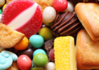
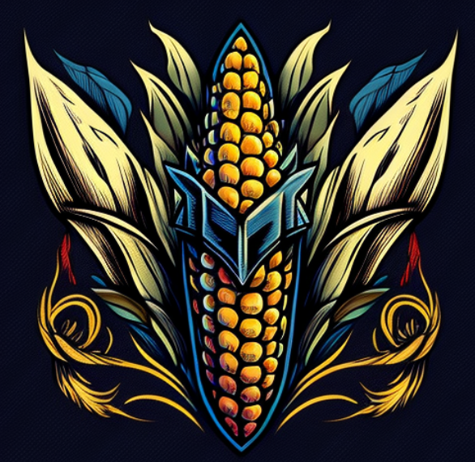

If you were a superhero, and also a vegetable, what might you be?
What is your favorite texture?
Velvety Smooth |
Rough and Tumble |
Itch-tastic |
Bumpy and Bulbous |
What is your favorite flavor?
Buttery |
 Sweet |
Savory |
Salty |
If you were a car, which one would you be?
El Camino |
Box Truck |
Lamborghini |
Ford Pinto |
You are Carrotron!
Wielding the incredible power of Vitamin Infusion, Carrotron can rejuvenate and heal those around them, spreading health and vitality with just a touch. This crunchy crusader always roots out evil and nourishes justice.
You are Kernelator!
Armed with the astonishing power of Rapid Replication, Kernelator can create countless copies of themselves to form a mighty maize army. This cob combatant tirelessly defends the world from chaos, popping up wherever injustice rears its head.
You are Tomatitan!
Possessing the extraordinary power of Antioxidant Aura, Tomatitán can neutralize harmful free radicals in the environment, protecting both humans and nature from unseen dangers. This juicy juggernaut fearlessly squashes all threats, keeping the world fresh and safe.
You are Brocca!
From the fabled Garden of Greens, Brocca can instantly boost the strength and abilities of allies by sharing their nutrient-rich essence. This floret fighter steams evildoers with ease.
EASTER EGG FOUND!
The Winter Egg was created by the Russian jeweler Peter Carl Fabergé in 1913 for Tsar Nicholas II. The egg is made of rock crystal, platinum, and diamonds, and features a white enamel exterior with intricate diamond-studded patterns resembling frost and snowflakes.